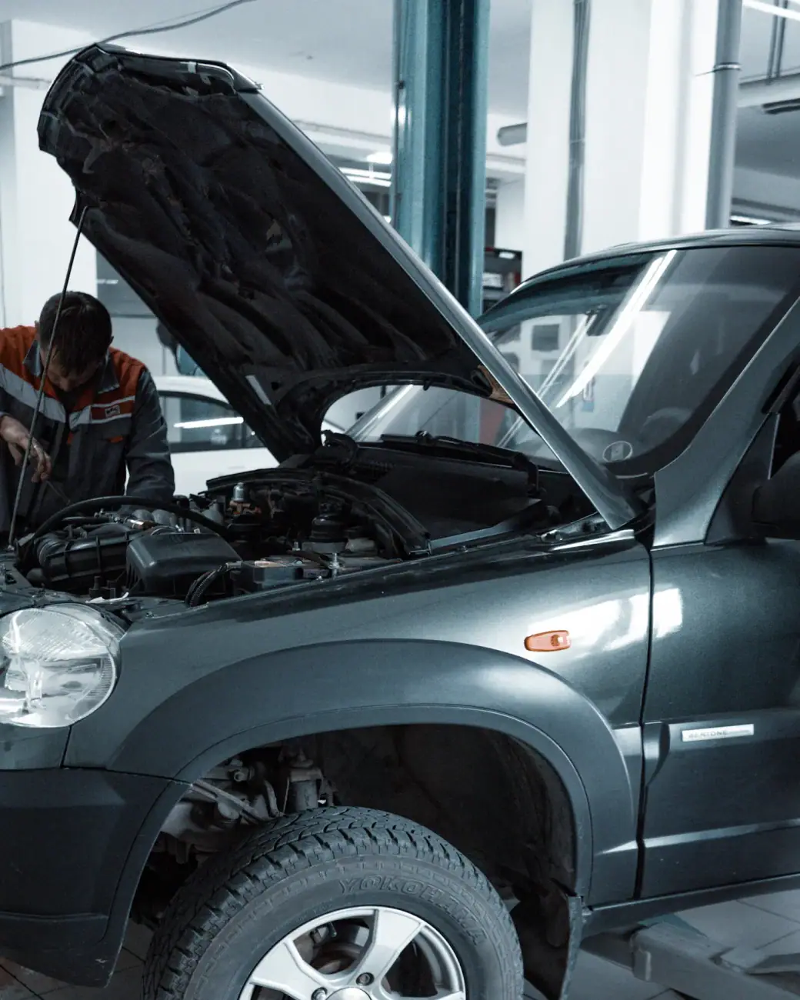
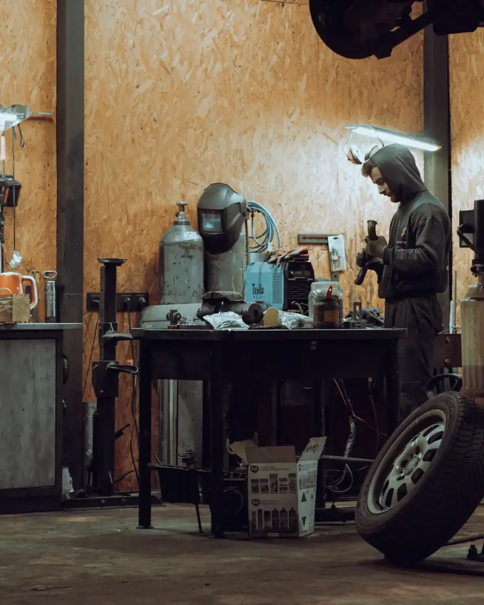

01
Mecânica geral
Diagnóstico e reparo do que o carro está apresentando, com explicação clara do problema antes de mexer.
Pedir orçamentoOficina mecânica no Jardim São Marcos · Embu das Artes
O Márcio e a equipe ouvem o carro e acham o problema de primeira. Mecânica geral, revisão e freios com garantia.

Clientes há mais de 18 anos
Escolha o serviço e fale direto com a Auto Mecânica Ramos. A mensagem já vai pronta no WhatsApp, é só dizer o modelo do carro.
Diagnóstico e reparo do que o carro está apresentando, com explicação clara do problema antes de mexer.
Pedir orçamentoLeitura completa das centrais do carro para achar a causa do problema antes de trocar peças.
Pedir orçamento
Troca de óleo e filtros, conferência de fluidos, freios e suspensão para o carro rodar tranquilo.
Pedir orçamento
Pastilhas, discos, fluido e revisão completa do sistema de freio. Barulho ou pedal baixo não se deixa para depois.
Pedir orçamento
Na Auto Mecânica Ramos muitos clientes fazem todas as manutenções há quase duas décadas. O atendimento é próximo e o serviço tem garantia.
Sem surpresa na hora de pagar: você sabe o que vai ser feito e quanto custa antes de começar.
Diga o modelo do carro e o que ele está apresentando. A equipe responde e marca o melhor horário.
O carro é avaliado na oficina e você recebe o orçamento explicado, peça por peça, antes de aprovar.
O serviço é feito como combinado e você busca o carro com tudo explicado.
Segunda a sexta: 08h–18h
Avaliações reais de clientes publicadas no Google Maps.
“18 anos cuidando dos carros q ja tive, a melhor mecânica da região, o dono Marcio, esse cara é espetacular, acho q ele tem um sensor nos ouvidos, sabe o q o carro ta sentindo, diagnóstico é imediato, sucesso.”
“Como sempre, super bem atendida.!!! Não é a toa que realizo todas as manutenções de carro há pelo menos 18 anos com eles. Vocês estão de parabénssss!!!!”
“Atendimento ótimo, preços excelentes. Mecânicos profissionais preparados para qualquer situação o serviço é bem prestado com perfeita qualidade e garantia.”
“Show. Perninha é monstro no que faz. Michele e Jeferson são top no atendimento, e os mecânicos são excelentes. Destaque pro Cesar.”
“Atendimento e serviços de primeira recomendo profissional de responsabilidade”
Não achou sua dúvida? Pergunte direto para a equipe no WhatsApp.
A Auto Mecânica Ramos fica na R. Augusto de Almeida Batista, 713, Jardim São Marcos, em Embu das Artes (SP), CEP 06814-000. Pelo botão "Traçar rota" nesta página você abre o caminho direto no Google Maps.
A Auto Mecânica Ramos atende segunda a sexta, das 08h às 18h. Não abre aos sábados e aos domingos. O agendamento é feito pelo WhatsApp.
É só chamar no WhatsApp (11) 4203-7253 pelo botão "Pedir orçamento". Conte o modelo do carro e o que ele está apresentando. A equipe responde e combina o melhor horário para você trazer o carro.
Mecânica geral, Diagnóstico por scanner, Revisão e troca de óleo e freios. O serviço certo para o seu carro é definido depois da avaliação na oficina.
Diga a marca, o modelo e o ano pelo WhatsApp e a equipe confirma o atendimento antes de você levar o carro.
É a leitura dos módulos eletrônicos do carro com um equipamento ligado na tomada de diagnóstico. Ele mostra códigos de falha e dados do motor, o que ajuda a achar o defeito sem trocar peças à toa.
Depende do óleo e do uso. Em geral, entre 5 mil e 10 mil km, ou uma vez por ano, o que vier primeiro. O manual do carro traz o intervalo certo, e a oficina confere para você.
Quando aparecer chiado ao frear, o pedal ficar mais baixo ou o carro demorar mais para parar. Na revisão, a espessura das pastilhas e dos discos é medida para saber a hora certa.
Peça seu orçamento na Auto Mecânica Ramos em poucos minutos pelo WhatsApp.